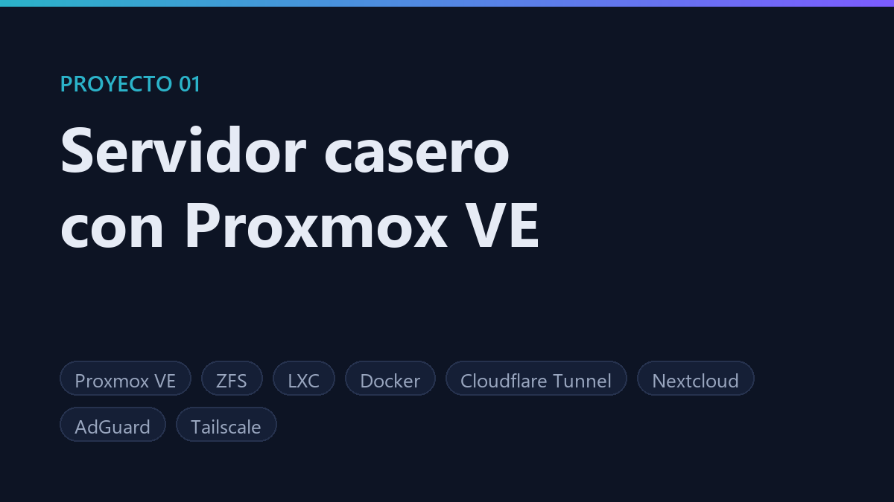

Proyecto 01 · Sistemas
Instalación y configuración de Proxmox
He montado en casa un servidor con Proxmox VE que aloja esta web, una nube privada y un bloqueador de anuncios para toda la red, sin abrir ningún puerto del router. Lo he documentado en una guía paso a paso.
- Proxmox VE sobre dos discos en espejo ZFS.
- Dos contenedores LXC: DNS con AdGuard Home y VPN con Tailscale; proxy inverso con Nginx Proxy Manager.
- Dos máquinas virtuales con Docker: Nextcloud, Uptime Kuma y Homepage en una; esta web en otra, aislada de la red de casa.
- Web pública con Cloudflare Tunnel y HTTPS con certificado comodín para los servicios internos.
- Copias automáticas diarias, instantáneas ZFS y avisos por Telegram.